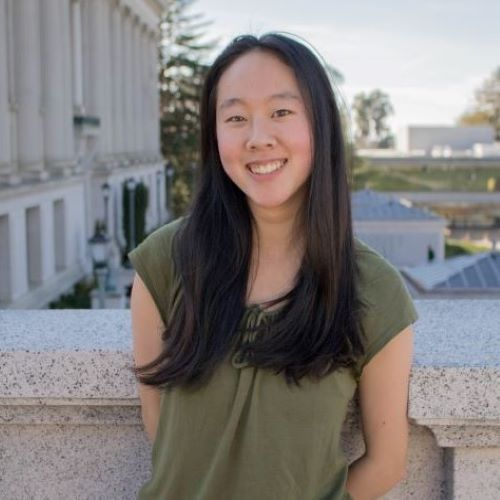

Staff
Instructors¶
 Francie McQuarrie (bio) Hello! I'm Francie. I've been a part of Data8 staff for five semesters, and I'm ecstatic to be one of the instructors this summer. I enjoy talking about statistics, computer science, data science, big dogs, SciFi/Fantasy novels, and cooking. Here's to a great summer!
fmcquarrie3@berkeley.edu
|
Natalia Mushegian (bio) I graduated this spring after teaching Data 8 as TA six times (3/4 of her years spent at Cal!). I am passionate about the course and bringing data science to a diverse audience - every field has data, and everyone can benefit from learning to interpret it! Please come talk to me about your own interests, and I'll tell you about my passion for ecology, land management, and climate change mitigation. I like to swing dance, make fermented foods, and go on walks, and am beyond excited to be teaching this summer. Come say hello!
nataliam@berkeley.edu
|
Teaching Assistants (uGSIs)¶
|
Anna Nguyen (bio) Hello! My name is Anna and I'm a fourth-year Public Health and Data Science major with a concentration in Epidemiology and Biostatistics. To avoid work, I like making poorly curated Spotify playlists, planning out vacations I can't afford, and scrolling through Dogspotting on Facebook. Data 8 has been my favorite class here at Cal, and I hope you enjoy it as much as I did!
anna-nguyen@berkeley.edu
Lab: Mon/Wed 1pm - 3pm in Cory 105
OH: Tue 2pm - 3pm
|
 Anna Burns (bio) I am a senior majoring in Data Science with an emphasis in Industrial and Business Analytics. I have been a part of Data 8 for the past four semesters and it is still one of my favorite classes. I'm from a small town in the NorCal foothills and love being out in nature. I also like cooking and baking and of course Data 8!
anna.burns@berkeley.edu
Lab: Mon/Wed 1pm - 3pm in Evans B6
OH: Thu 12pm - 1pm
|
Jamie German (bio) I am a Senior majoring in Data Science, with a minor in Statistics. I just got back from studying in France (hence the crepe), and I'm looking forward to being back in Berkeley. Hope you enjoy Data 8 as much as I did!
jamiegerman@berkeley.edu
Lab: Mon/Wed 1pm - 3pm in Evans 458
OH: Thu 1pm - 2pm
|
Katherine Tsai (bio) I am a sophomore from Palos Verdes, CA studying Data Science and Cognitive Science. In my free time I like to take naps, dance, or get gelato with friends. Data 8 has been one of my favorite classes so far, and I am excited to get to know everyone this semester!
katherinetsai@berkeley.edu
Lab: Mon/Wed 11am - 1pm in Cory 105
OH: Thu 2pm - 3pm
|
 Lillian Louie (bio) Hi everyone! I'm a rising senior majoring in data science. You can probably find me at a coffee shop either catching up on homework or watching my daily dose of korean dramas. Data8 has definitely changed my college experience, and I hope you'll enjoy the class as much as I did!
lillianlouie@berkeley.edu
Lab: Mon/Wed 3pm - 5pm in Cory 105
OH: Tue 1pm - 2pm
|
 Rohan Narain (bio) Hello! I'm a fourth year Statistics and Data Science student from San Jose, CA, and I'm very excited to meet you all! I'm a huge baseball fan, and I enjoy discussing music, movies, and the San Francisco Giants. I also really love statistics, so if you have questions about studying statistics and/or data science at Cal, please feel free to ask!
narain.rohan@berkeley.edu
Lab: Mon/Wed 11am - 1pm in Evans 458
OH: Tue 4pm - 5pm
|
 Ryan Roggenkemper (bio) I'm a 4th year CogSci & CS major from Los Gatos, CA. I enjoy cooking (because it usually leads to eating things, which is pretty great), music, and playing a sport/game called jugger. I'm also a bit too good at procrastinating (please don't follow my example).
rroggenkemper@berkeley.edu
Lab: Mon/Wed 3pm - 5pm in Evans 458
OH: Fri 2pm - 3pm
|
 Sam Wu (bio) Hey there! I am a junior studying Computer Science and Economics, and I'm super excited to be on course staff again for Data 8 this summer! I'm from Vancouver, Canada, and I love to learn about the different cultures of the world (I speak English, Mandarin, and French)! Hit me up if you like anime, food, traveling, or learning new languages!
samwu101@berkeley.edu
Lab: Mon/Wed 3pm - 5pm in Evans B6
OH: Thu 3pm - 4pm
|
|
Shoumik Jamil (bio) I'm a senior studying Data Science with an emphasis in Cognition. I love watching sports, reading FiveThirtyEight, and listening to new music in my spare time. Data 8 is my favorite course and I look forward to sharing my enthusiasm for Data Science with everyone!
sjamil@berkeley.edu
Lab: Mon/Wed 5pm - 7pm in Cory 105
OH: Tue 12pm - 1pm
|
Yanay Rosen (bio) I am a rising third year majoring in Computer Science. I was born in Israel but grew up in the suburbs around Boston. This is my first semester as a uGSI, third semester on staff and I also help develop the online version of Data 8, Data 8x. I love Data 8 and hope you will too!
yanayrosen@berkeley.edu
Lab: Mon/Wed 11am - 1pm in Evans B6
OH: Fri 12pm - 1pm
|
Tutors¶
 Angela Zhou (bio) Hello!! I am a third year studying data science with a domain emphasis in applied math. I'm from Albuquerque, NM so you can ask me about Breaking Bad or High School Musical. In my free time, I love to binge Netflix (I know almost all the words to HIMYM and Friends), listen to music (I really like EDM/techno and alternative indie), and go on adventures with my friends. If you ever have any questions or just want to talk, please feel free to reach out! :)
zhoa210@berkeley.edu
|
 Ashley Quiterio (bio) Hi! I am rising junior pursuing Data Science. I am from Central California, but I love exploring the Bay. I'm very excited to meet you all. :)
ashleyquiterio@berkeley.edu
|

Celine Chen (bio) Hi, I'm Celine and I'm a rising junior studying Sociology & Cognitive Science (hopefully with a minor in Data Sci). I'm originally from Fremont, California and have been living in the Bay Area my whole life. In my free time, I love to travel and learn about other countries/cultures!
celinechen_99@berkeley.edu
|
Erika Mack (bio) I am a rising 3rd year student at UC Berkeley majoring in Data Science with a domain emphasis in Psychology. This is my third semester working on staff for Data 8. A fun fact about me is that I love working with animals. I have two snakes and I foster kittens for Berkeley Humane
erika.n.mack@berkeley.edu
|
|
Grace Li (bio) I'm a second year statistics and computer science major, this will be my second semester tutoring for data 8. Looking forward to meeting all of you this summer!
fqzbdkh@berkeley.edu
|
 Inderpal Kaur (bio) Hi there! I'm a fourth year Data Science major who is also pursuing minors in English and Computer Science. Data 8 was the course that initially ignited my passion for data science, so I'm really looking forward to being a part of course staff this summer! Some of my other interests include watching too many YouTube videos, inserting Harry Potter references into everyday conversation, and searching for new coffee shops to visit.
ikaur@berkeley.edu
|
 Irene Wang (bio) Hi I am Irene! I am a rising third year statistics major from San Diego. In my free time I enjoy drawing, reading, watching movies, and hanging out with friends. Data 8 is my favorite course, and I can't wait to teach you this semester!
irenerwang@berkeley.edu
|
Jennifer Jia (bio) Hi, I'm Jenn! I'm a third year Data Science major and CS minor. When I'm not stu(dying), I'm most likely consuming too much boba, watching too many dance videos, and/or spending too much money on concerts. I'm looking forward to meeting you all! (P.S. always down to grab boba :"))
jenniferjia00@berkeley.edu
|
|
Kanika Ahluwalia (bio) Hi! I am a rising Junior studying Data Science. This is my second time on staff and I am super excited to meet you all! In my free time, I enjoy trying new things, going outside, and finding cool food places!
kwalia1999@berkeley.edu
|
Kevin Hsu (bio) Hi everyone! I'm Kevin, a second year intended double major for computer science and data science. I enjoy basketball, camping, playing cards, and learning guitar. This is my second semester on course staff, and I look forward to meeting all of you!
kevin.hsu@berkeley.edu
|
Logan Ritter (bio) I am going into my Junior year and will be declaring Computer Science this Summer. I grew up in Ohio but always came to the Bay Area for Christmas and New Years. I also mentor middle schoolers in math and play Ultimate Frisbee.
lritter@berkeley.edu
|
 Parham Rouzbahani (bio) I’m an incoming Business-Data Science loving junior from Toronto, Canada, eh? I’m a huge fan of dogs, board games, travelling and snow.
parouz@berkeley.edu
|
 Sophia Tan (bio) Hi! I'm a rising third year from SoCal studying Molecular and Cell Biology and Data Science. If I'm not in class, I'm probably binge-watching a new show or training with the Cal Taekwondo team. I also love jigsaw puzzles, Disney, and everything about the MCU. I'm excited to meet you all and hope you enjoy the class!
sophiatan@berkeley.edu
|
 Wyatt Walsh (bio) I am a rising senior studying Industrial Engineering and Operations Research and am from a small town in Eastern California. In my free time, I like to watch the NBA, play FIFA, go to Hackathons, and hang out in my co-op!
wwalsh@berkeley.edu
|